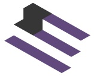

OUR WORK
Strategic initiatives advancing civic engagement and democratic participation.
PROJECT 1 — NEW
Privacy-first civic action for organizations that protect the people who show up
Action Engine is a privacy-first platform for creating, distributing, and measuring civic actions — rallies, workshops, campaigns, volunteer events, and more. Built as an alternative to Mobilize.us (now private-equity owned), Action Engine gives organizations full control over their supporter data while providing aggregate-only analytics that never expose individual identities. Designed for EU/Swiss infrastructure hosting to resist jurisdictional overreach, with distribution to Bluesky, Mastodon, and social.civ.works.
PROJECT 2
Trusted information for a stronger democracy
CivicSky Media is an initiative to combat disinformation and provide verified, trustworthy news and information to communities. By partnering with fact-checkers, journalists, and civic organizations, CivicSky aims to create a network of reliable media sources that empower citizens to make informed decisions.

PROJECT 3
Corporate Social Behavior Ratings
ECI helps people see what companies actually stand for. We track environmental impact, labor and equity practices, executive pay fairness, supply-chain compliance, and political influence—and we flag when corporate ad dollars support media ecosystems known for disinformation or anti-democratic content. The result is a clearer picture of which brands deserve trust, and which ones quietly undermine the systems they depend on.